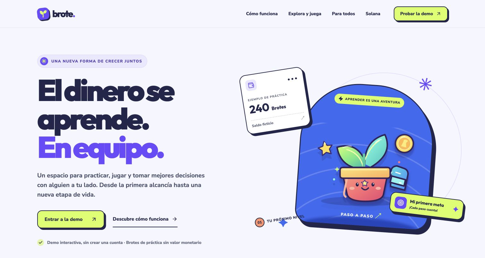
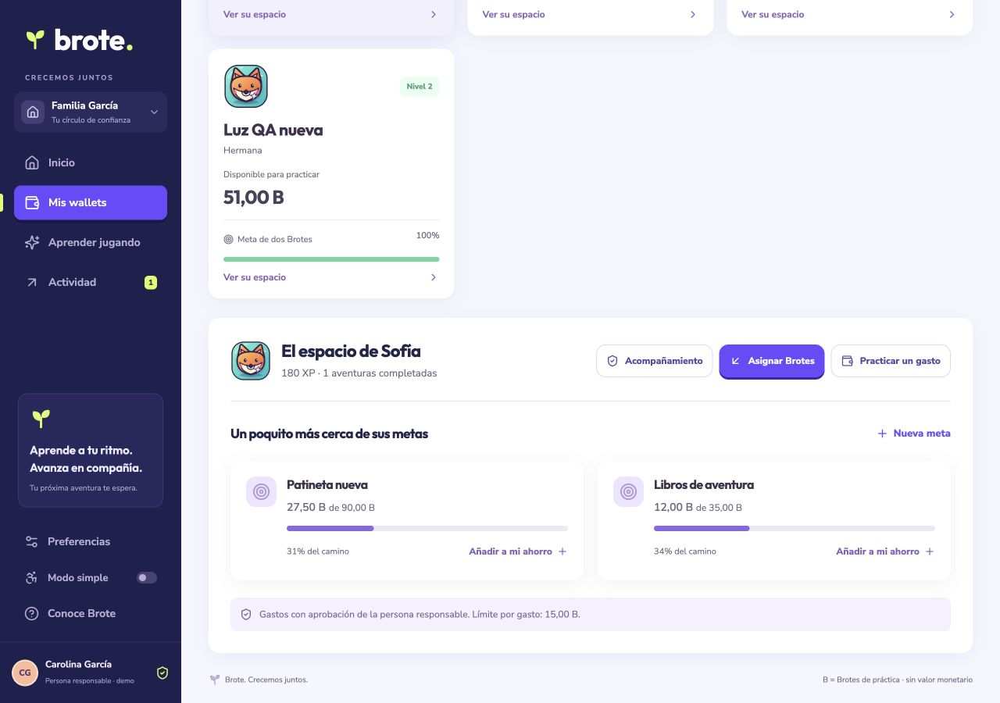

Learn together
Landing page, practice wallets, goals, activity and review, XP adventures, simple mode, and backups. Mainnet integration with guardian-signed accounts.

Brote keeps its name and introduces a game-inspired identity, with a separate landing page and a shared experience for all ages.

Practice wallets, goals, purchase review, two interactive games and an optional safety questionnaire, backups, and simple mode in Spanish, English, and Brazilian Portuguese. Solana mainnet and testnet have separate verified connections and storage.
View the responsive mobile menu · Full-height side sheet with 34px controls.
Landing page, practice wallets, goals, activity and review, XP adventures, simple mode, and backups. Mainnet integration with guardian-signed accounts.
Test connection and signing with a real wallet, confirm a transaction, and record the demo. Validate the experience with children, adults, and seniors.
Real sessions and roles, consent, cross-device recovery, reliable RPC, and delegated limits in a reviewed program. Evaluate USDC on Solana.
Explore Visa and virtual cards once accounts, controls, and payments are ready. Outside the current MVP.
Actual Git history, organized by functional changes. The complete index explains each commit and includes commands for reviewing it.
f391f28 | chore: bootstrap the React and TypeScript web workspace Set up Vite, reproducible npm dependencies, a runnable entry point, and build/test scripts for the hackathon app. |
92e9645 | refactor: define wallet contracts and separate practice from SOL Establish profile, goal, transaction and store types shared by parallel modules. Format fictitious Brotes separately from real SOL. |
bbf730c | feat: enforce practice balances, approvals and savings rules Implement immutable integer-cent balances, once-only expense approval, savings goals, paused wallets and validated local profiles. Reject crypto ledger mutations. |
7cc76c8 | test: protect practice money invariants and saved-state validation Cover non-negative funds, exact amounts, approval replay protection, savings, unique rewards, pause guards and corrupted persisted data. |
3dbc590 | feat: persist the practice journey in the browser Expose a React store backed by validated localStorage, with safe in-memory fallback and synchronous state mutation errors. |
bf2181f | feat: introduce the illustrated family identity Add original SVG profile companions, a leaf logo and a friendly growing plant illustration without third-party game assets. |
a032135 | style: establish the family dashboard design system Create the desktop web shell, calm palette, readable cards, wallet layouts and reduced-motion/accessibility styling. |
15bca20 | feat: add keyboard-accessible dialogs Trap focus, restore focus on close, handle Escape and keep dialog content scrollable while locking the background. |
d07a1a6 | feat: create profiles and manage supervised practice wallets Add profiles with adult sharing agreement, fake-money allocation, categorized expenses, savings goals and guardian spending rules. |
1a0d93b | feat: turn financial learning into three playable adventures Introduce shopping, phishing and emergency-budget games with feedback, XP, badges and one-time practice rewards. |
c4307a4 | feat: derive stable Solana profile seeds and exact lamports Keep derivation within the 32-byte seed limit and parse SOL amounts without losing lamport precision. Encode transaction signatures for recovery links. |
8eff414 | feat: connect mainnet guardian accounts and sign supervised SOL transfers Verify the cluster fingerprint, derive zero-data System accounts, read RPC balances/history and prepare guardian-signed account creation, deposits and TransferWithSeed withdrawals. |
a8865d0 | test: verify deterministic accounts and guardian withdrawal authority Check seed stability, precise lamports, base signer instruction keys and signature encoding without sending funds. |
1c88b7b | feat: expose verified Solana balances and transaction receipts Add wallet connection and read-only exploration, account actions, honest unknown/error states and Explorer links for confirmed or uncertain transactions. |
ebdcc75 | feat: preserve profile identities through backup and restore Export stable profile IDs and the guardian public address. Validate imports and download the current journey before replacing local data. |
654276e | feat: connect the family dashboard, learner spaces and activity review Integrate modules, role demo views, derived weekly summaries, guardian review, CSV export, preferences and profile recovery. |
34ad8b7 | docs: explain the Solana custody model and integration limits Document seeded System accounts, guardian-only authorization, RPC verification, error behavior and the absence of private-key storage or a custom program. |
f03ee5a | docs: define the brand and roadmap beyond the prototype Capture naming alternatives and distinguish shipped scope, hackathon validation, production identity/consent/recovery and future Visa exploration. |
d94a69c | docs: prepare a timed pitch and honest hackathon submission Map the product to judging criteria and plan a three-minute demo, with explicit placeholders for team bios, recordings and actual transaction proof. |
380168a | docs: document setup, verified scope and static Site hosting Explain how to run/test the app, prototype boundaries and dependency findings. Retain the registered Site ID and declare dist as static output. |
17863fd | build: support static app routes and browser-compatible Solana assets Add a real /app entry for static hosting, resolve browser Buffer imports and split Solana assets into cacheable chunks. |
bbc89df | style: give Brote a vivid game-inspired visual identity Replace the sage palette with purple, blue, lime and coral. Add a dark sidebar, bold rounded type, stronger actions and a quieter simple-mode presentation. |
11edea2 | feat: refresh the Brote mascot and collectible profile companions Introduce original cel-shaded SVG artwork, vivid animal avatars, a modern sprout mark, standalone logo and favicon. Use unique SVG gradient IDs. |
5b69fd6 | feat: add step-by-step learning and optional spoken questions Make missions more vivid while preserving rewards. Simple mode shows one quiz question at a time, prevents incomplete submissions and offers explicit spoken prompts. |
1870bb9 | feat: introduce a compelling game-inspired Brote landing page Explain the shared learning journey with original illustrations, three steps, playable mission teasers, inclusive messaging and working app links. |
63f92cb | feat: connect the landing, app routes and persistent simple mode Route the product landing and web app separately. Support direct learning/Solana links, save the simple-mode preference and show the active demo profile. |
11e10ca | fix: explain mainnet RPC fallback without exposing technical payloads Keep the verified PublicNode fallback visible in plain language while avoiding raw JSON identifiers in the user flow. |
a408799 | docs: align the product story with the final brand and broad audience Retain Brote, document the energetic identity and simple mode, and update the roadmap for young children, adult beginners and senior learners. |
18ef9ad | fix: preserve landing CTA contrast on vivid sections Keep the demo link and arrow dark on light buttons inside purple sections, correcting the issue observed during visual QA. |
8b58c60 | docs: capture browser verification and submission links Record automated checks, tested practice flows, real mainnet reads, screenshots and honest remaining signing/usability limits. Include the product and logo targets for the submission. |
e499590 | docs: index the complete implementation commit history Document each actual implementation milestone with its hash, purpose, and commands for inspecting the changes. |
3aafb4c | docs: add an interactive product and roadmap overview Add an interactive product summary, screenshots, roadmap, and history to review the submission. |
46d6a3e | fix(learning): stop quiz narration when its context closes Stop quiz narration when it closes, the question changes, or the learner profile changes. Detach callbacks and verify cancellation with a stub. |
5236f67 | fix(wallets): bind consent to identity and complete goals at their exact target Require consent again after an identity edit, and allow saving the final cent toward a goal; test 1.99 of 2 before completion. |
91df8fd | fix(ledger): preserve exact cents and record purchase review dates Convert decimal amounts to exact cents, validate positive ledger entries, and record when each purchase is resolved. |
59df3f1 | fix(a11y): isolate dialogs from background navigation Isolate the background while dialogs are open, limit focus to visible enabled controls, and restore focus on close. Verify Tab, Shift+Tab, and Escape in Chrome. |
d0699ae | fix(solana): journal signed operations and retry identical transactions Persist signatures and bytes before sending, block uncertain outcomes, and retry the identical transaction. Validate identity, signatures, and terminal states while retaining pending records. |
f3edd5a | fix(storage): serialize durable writes and preserve recovery identities Coordinate a single writer across tabs, persist before confirming, and retain damaged records. Backups preserve identities, guardians, and signed operations. |
92d1515 | fix(solana): guard wallet sessions, verified reads and operation handoff Protect wallet sessions and profiles during signing, synchronize the journal when switching tabs, and retain known reads when using the fallback RPC. |
823c7a1 | fix(export): escape spreadsheet formulas behind leading whitespace Neutralize CSV formulas even after spaces, tabs, or line breaks. Check quoting, Unicode, and exported files. |
73ad4fc | fix(recovery): carry pending signatures and cancel stale restores Export relevant signatures and validate derivation during restore. Stop cancelled or stale restores and preserve recoverable originals. |
47cf807 | fix(app): expose persistence state and clarify guardian actions Show persistence status, limit approval prompts to guardians, and use resolution dates in activity. Keep the landing page from holding the editing lock. |
a01b0b3 | style(web): remove decorative card borders and compact the responsive layout Remove card outlines and stripes, compact the desktop bar to 62 px, and adapt forms, games, the landing page, and Solana views for narrow screens. |
234ee32 | feat(navigation): move mobile controls into a full-height side sheet Replace mobile bars with a header and a full-height side sheet that enters from the right. Reuse desktop actions and preserve focus handling. |
27e36eb | style(mobile): size compact controls and icons around 34px Reduce the mobile header to 48 px and controls to about 34 px. Keep text legible and allow multi-line content to grow vertically. |
030244a | docs(quality): record independent audits and responsive browser evidence Record the function-by-function audit, 53 tests, and browser flows. Include screenshots and explicit limits around real signing and physical-device checks. |
cfdd2ef | docs: extend the complete change history after audits and mobile refinements Extend this index through the audit and responsive mobile refinements, and update the interactive product overview. |
3f0e6b8 | chore(license): publish Brote under the MIT license Add the MIT license and matching package metadata, including the public repository URL. |
97a1f7e | docs: present the repository and current architecture in English Translate the remaining repository presentation, preserve Spanish interface labels, and replace obsolete component ownership instructions with the current architecture. |
5185f6d | ci: validate the ledger, Solana safeguards, and production build Run the regression tests and production build in GitHub Actions using Node.js 22 and read-only repository permissions. |
1a5911a | build(vercel): configure static deployment and direct app routes Configure the Vite build output, deterministic npm installation, direct app routes, and ignored local Vercel settings. |
1ec64ec | docs(architecture): illustrate practice storage and guardian signing flows Add a static SVG, responsive standalone HTML diagram, six-second GIF, and reproducible generator for the separate practice and real-SOL paths. |
0c92d7e | build: publish the architecture page and exclude local deployment credentials Publish the standalone architecture page with both URL forms and exclude local credentials and generated files from deployment uploads. |
89b2455 | docs(readme): explain Brote and its Solana architecture concisely Replace the long introduction with a concise English README covering the product, architecture, mainnet signing, local setup, and prototype limits. |
bfdcd5f | fix(docs): give the architecture SVG readable intrinsic dimensions Set explicit SVG dimensions so GitHub displays the architecture at a legible width; regenerate the standalone HTML. |
6e84d41 | docs(deployment): record the live release and complete publication history Record the public GitHub repository, Vercel deployment, live route and responsive checks, and all publication commits. |
5f75f79 | fix(readme): retain legible diagram sizing in GitHub previews Declare the diagram's display width in the README so cached SVG intrinsic dimensions cannot shrink the architecture preview. |
3f10bae | fix(solana): align form inputs with wallet action buttons Remove label-wrapper spacing and use shared control heights: 44px on desktop, 48px in simple mode, and 34px on mobile. |
5917158 | fix(ui): keep responsive actions compact and readable Align savings fields, keep amount presets on one line, preserve narrow approval text, and make short sidebars reachable. Prevent simple-mode dashboard overflow at 320px. |
6b328cc | fix(learning): adapt mission cards and dialog scroll layouts Use two mission columns at medium desktop widths, wrap footer actions, preserve budget amounts, and keep game headings outside the scrolling body. Align mobile allocation icons and labels. |
6b1052d | style(landing): soften cards and compact mobile actions Remove hard card outlines, soften shadows, contain narrow game cards, and use 34px mobile calls to action with a shorter header. |
e37af6b | docs(quality): record responsive alignment checks and evidence Record the ten viewport presets, verified form heights, independent review results, and screenshot evidence. Extend the complete commit index and product overview. |
3496833 | fix(dashboard): enlarge the weekly chart and clarify its scale Let the weekly chart fill its card, use proportional responsive bars, enlarge labels and the legend, and align guide lines to the plot. Keep zero values invisible and preserve completed-transaction filtering. |
94bf26a | docs(quality): document weekly chart readability checks Record the chart sizing correction, ten responsive presets, rendered typography, zero-value checks, and desktop/mobile captures. Extend this index and the product overview. |
8066e03 | fix(docs): capture the enlarged weekly chart accurately Replace the mistaken hero capture with the actual enlarged weekly chart, using document coordinates for the screenshot crop. |
411b7d2 | feat(i18n): add persistent Spanish, English, and Portuguese catalogs Add reactive language selection, cross-tab synchronization, document metadata, precise locale formatting, dynamic templates, and translation regression tests. |
6bd3f78 | feat(landing): localize every section and add a compact language selector Translate the complete landing experience and keep its language selector and mobile demo action compact. |
26e1d1a | feat(wallets): translate profile, spending, savings, and recovery flows Localize wallet creation, consent, amounts, rules, savings, backup and restore while preserving profile identities and open form values. |
ee3290a | feat(app): localize dashboards, activity, settings, and mobile navigation Translate the shared shell, side menu, summaries, activity filters and CSV display descriptions; keep existing notifications reactive to language changes. |
6a9702c | feat(learning): translate missions, feedback, badges, and read-aloud prompts Localize all three games, feedback, rewards, badges and narration using stable mission and answer IDs. |
6413b55 | feat(solana): localize account controls, receipts, and exact SOL displays Translate the account panel, validation, status and receipts; format SOL precisely with locale separators and preserve public addresses. |
6dcff37 | fix(solana): parse decimal commas and reject rent-invalid withdrawals Accept a single decimal comma or point without losing lamports; reject mixed separators and profile withdrawals leaving an invalid rent balance. |
1dc689c | fix(solana): recheck final fees, rent states, and imported signatures Quote the final signing message, recheck guardian funds and rent transitions, preserve session/message identity, and reconcile imported terminal claims before accepting them. |
c1264a2 | docs(quality): record localization coverage and mainnet integration safeguards Document 120 responsive locale checks, screenshot evidence, the 73-test suite, exact fee/rent guards, and the limits of read-only mainnet verification. |
48cf94e | docs(history): index localization and Solana verification commits Extend the complete functional commit index and product overview through this release. |
bd66864 | fix(i18n): polish English hero copy and singular progress labels Use natural English landing copy and singular labels for one goal, one completed adventure, or one pending mobile approval in each language. |
4020537 | docs(history): record final translation copy refinements Keep the complete commit index and overview current after the language copy polish. |
532fa64 | feat(solana): verify testnet builds and rent-safe recipient transfers Keep mainnet as the default, verify testnet genesis, isolate operation keys, and label test SOL. Reject invalid withdrawal destinations or recipient balances before signing. |
d5a8102 | test(wallet): add a localhost-only disposable testnet signing adapter Add opt-in browser signing backed by an external 0600 key file, strict loopback/origin checks, testnet validation, System Program authority checks, and BigInt regression tests. |
ff7b407 | fix(recovery): isolate profiles and signed backups by Solana network Use separate profile, lock, and journal keys on testnet. Tag backups with their network and reject cross-network restores while keeping older mainnet backups compatible. |
1a04eb6 | test(solana): record live testnet transfers and recovery evidence Add a reproducible live runner, real confirmed transaction signatures, browser receipts, once-only rebroadcast, wrong-guardian rejection, and restored-signature reconciliation evidence. |
e5f8977 | docs(history): index testnet validation and recovery fixes Extend the complete functional history and product overview with actual testnet integration, safe QA tooling, recovery fixes, and live evidence. Retrieve this update with `git log --oneline --grep="index testnet validation"`. |
c319006 | feat(solana): expose isolated mainnet and testnet sessions in production Add strict URL selection, full reload selectors, per-network RPC overrides, and isolated persistence without shipping the QA wallet. |
cd61de9 | feat(brand): add original market and island game worlds Add responsive original SVG worlds and reward assets following Brote’s palette and character style. |
55efd36 | feat(learning): build a playable budget market with movement and refunds Create a three-round game with keyboard/touch travel, price comparison, explicit purchases, exact refunds, and budget guards. |
1a59985 | feat(learning): build a four-day savings island with emergency reserves Create a resource-management game with daily income, protected essentials, locked goal savings, a reserve-funded storm, and restart. |
a7eff84 | feat(arcade): integrate replayable games with once-only profile rewards Replace two exercises with illustrated games, add localized entry points and compact dialogs, and save rewards once while allowing replay. |
3513243 | docs(product): introduce interactive games and both Solana networks Update the landing page, English README, and game documentation for the playable experience and production network choice. |
0895fce | test(arcade): document full playthroughs, mobile controls, and reward safety Record 100 passing tests, real browser wins and replay, 34px controls, translations, read-only protection, and reviewed fixes. |
83f76f6 | docs(history): index dual-network release and playable finance games Keep the complete functional commit history and product overview current for this release. |
7ff815a | feat(media): render branded 16:9 tutorials from real browser captures Render real screenshots and gameplay sequences with Brote fonts, zooms in and out, pointer highlights, transitions, narration, captions, and preview validation. |
679a9d6 | docs(video): script complete onboarding and record interactive game walkthroughs Write the complete Spanish app and game walkthroughs, retain actual UI captures and browser footage, and label archived testnet proof. |
6e72dad | feat(guide): add multilingual video library with accessible downloads Provide two accessible 16:9 players, subtitles and downloads in a compact, responsive Spanish/English/Portuguese page. |
c814e57 | fix(guide): preserve app language and show the activity export control Keep the selected language consistent with the app, retain it after reload, and show the history export action in the walkthrough. |
4617247 | feat(media): publish narrated full-app and game guides in 1080p Ship the full 2:52 app guide and extra 1:02 games guide with 1080p H.264, 48kHz narration, faststart, posters and SRT/VTT captions. |
9555790 | docs(media): document tutorial chapters, provenance, reproduction, and playback QA Explain every chapter, evidence boundaries and reproducible rendering; record final metadata, hashes, native playback and mobile checks. |
1095fbb | docs(history): index the complete instructional video release Keep the complete commit list and interactive overview current with all tutorial implementation, review fixes, published media and evidence. |
237c29b | feat(media): render full-frame English walkthroughs with captions Preserve the whole app viewport, combine real footage with English instructions, and include the licensed Brote fonts. |
af6b49e | feat(audio): synthesize an original playful walkthrough music bed Create a deterministic, sample-free 114 BPM arrangement that stays behind the narrator. |
0198224 | docs(video): record English app actions and script complete guided tours Capture actual profile, practice, game, approval, Solana, and backup actions. Script both a complete walkthrough and an app-wide quick tour. |
8a3fe4d | fix(media): normalize footage color metadata before compositing Normalize videos and screenshots before concatenation so colors and overlay timing stay correct across cuts. |
d8c7fe8 | feat(media): publish English app walkthrough and quick tour Publish the 2:19 full-app walkthrough and 49-second quick tour in 1080p, with English narration, music, posters, and captions. |
1757fad | feat(guide): make English app demos the primary video guides Replace the main players, preserve the gallery translations, and keep mobile downloads and language controls at 34px. |
4514d24 | docs(media): explain English chapters and reproducible video editing Document chapter navigation, source assets, audio and font licenses, reproduction, and testnet evidence boundaries. |
0958896 | test(media): verify responsive playback and export fidelity Record complete decoding, media metadata and hashes, native playback, responsive language checks, independent review fixes, and 100 passing app tests. |
3c3c1e9 | docs(history): index the English app walkthrough release Keep the complete functional commit index and product overview current through the English walkthrough release. |
Current update | docs(history): synchronize the complete release overview Keep all 107 functional commits visible in the product overview. |